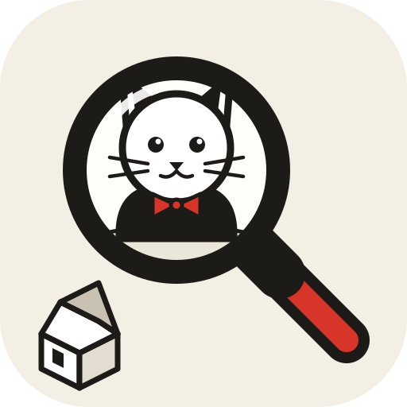

Animopolis
enquêtes à la loupe
Carnet
Dossiers
+
−
⤢
Indice
Personnages
Étapes
Nouvelle version disponible
Mettre à jour

Animopolis
enquêtes à la loupe
Continuer
Nouvelle partie
Charger une partie
Sauvegarder la partie
Options
Installer l'application
Téléphone, tablette ou ordinateur
×